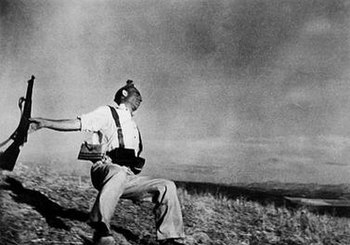
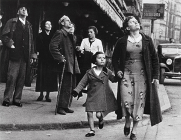
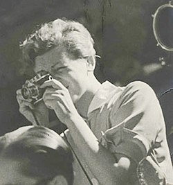
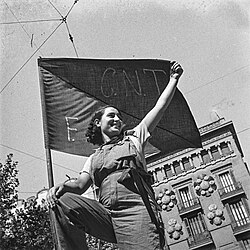
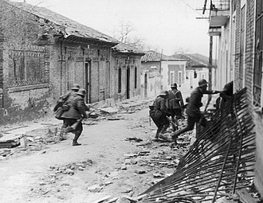
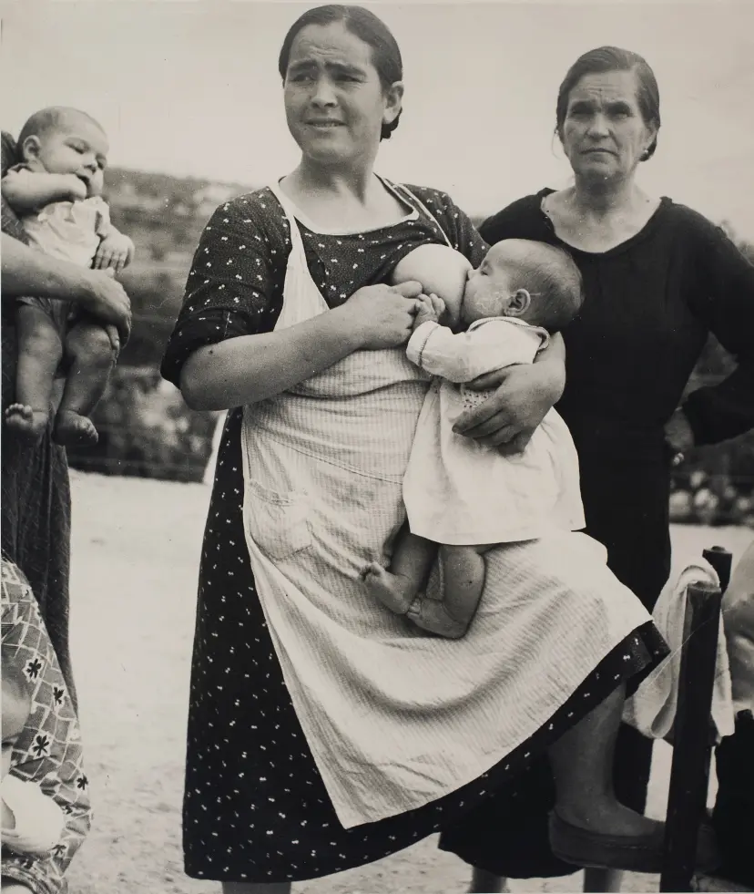
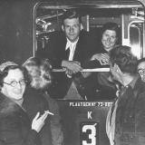
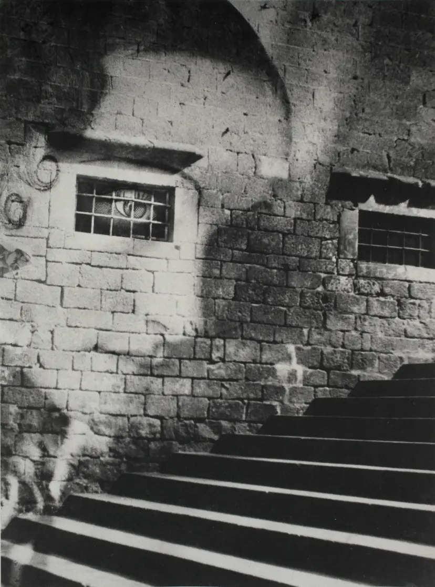
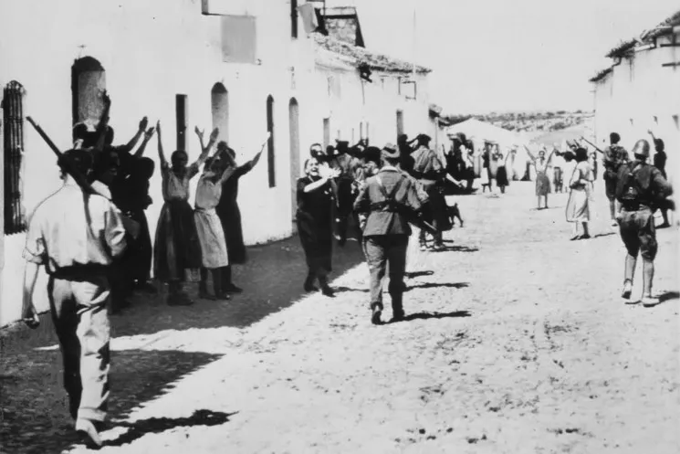
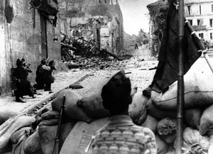

Robert Capa’s beroemde foto toont een republikeinse soldaat die lijkt te worden neergeschoten in de buurt van Córdoba in 1936.
Een vrouw vlucht met een kind tijdens een luchtaanval in Bilbao. Gefotografeerd door Robert Capa in 1937.
Een republikeinse militieman rust aan het front. Deze foto werd genomen door Gerda Taro in 1936.
Een anarchistische vrouw poseert gewapend op een barricade in Barcelona. Symbolisch voor de rol van vrouwen in de strijd.
Nationalistische troepen vallen Madrid binnen tijdens het beleg dat drie jaar duurde.
Een jonge republikeinse soldaat kijkt onzeker naar de horizon. Symbool van de hoop en wanhoop van de jeugd.
Militiemannen van de Internationale Brigades poseren in Spanje. Velen kwamen uit Nederland, Duitsland en Frankrijk.
Een vrouw haast zich naar een kathedraal, vastgelegd door Kati Horna. Haar stijl is poëtisch en surrealistisch.
Na de val van Barcelona in 1939 vluchtten duizenden mensen de grens over naar Frankrijk.
Republikeinse strijders verdedigen hun positie achter zandzakken tijdens een veldslag in 1936.
